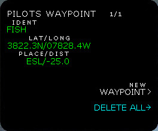
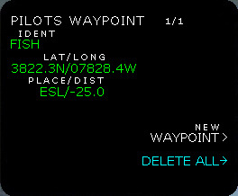
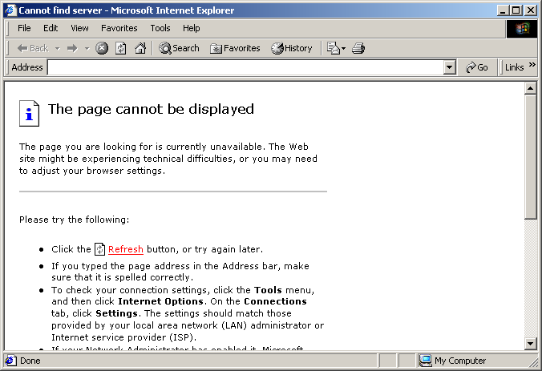
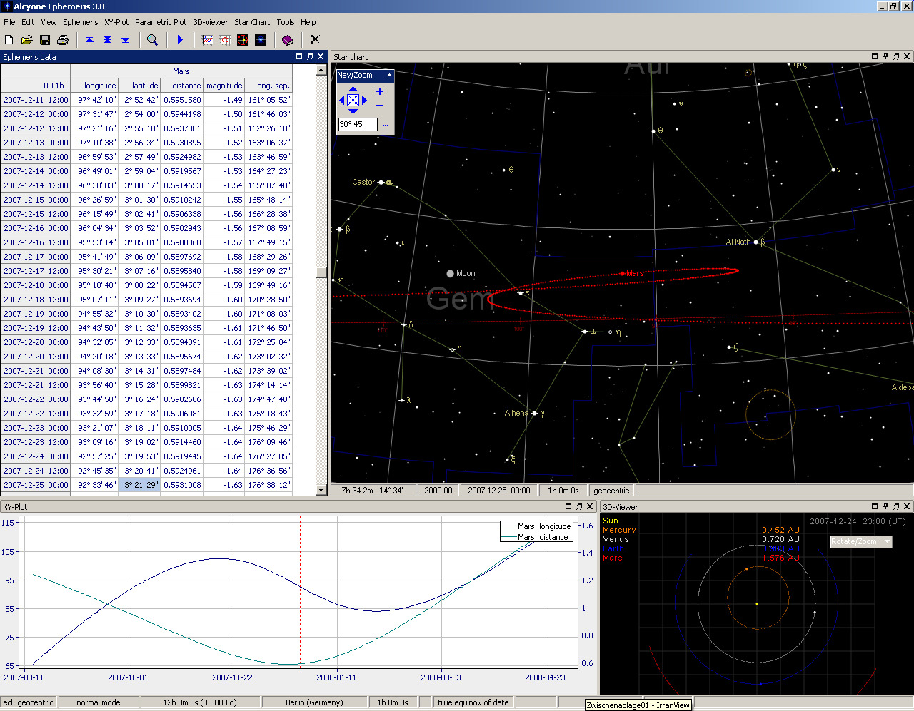
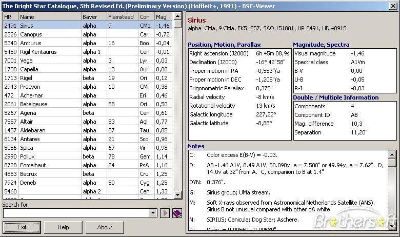
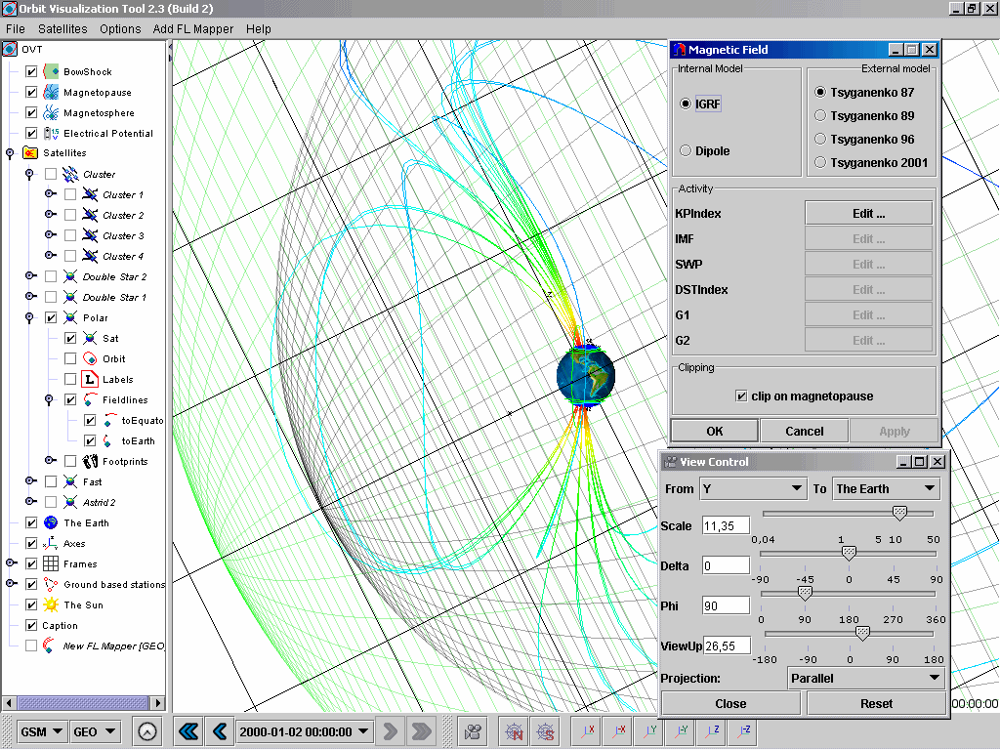
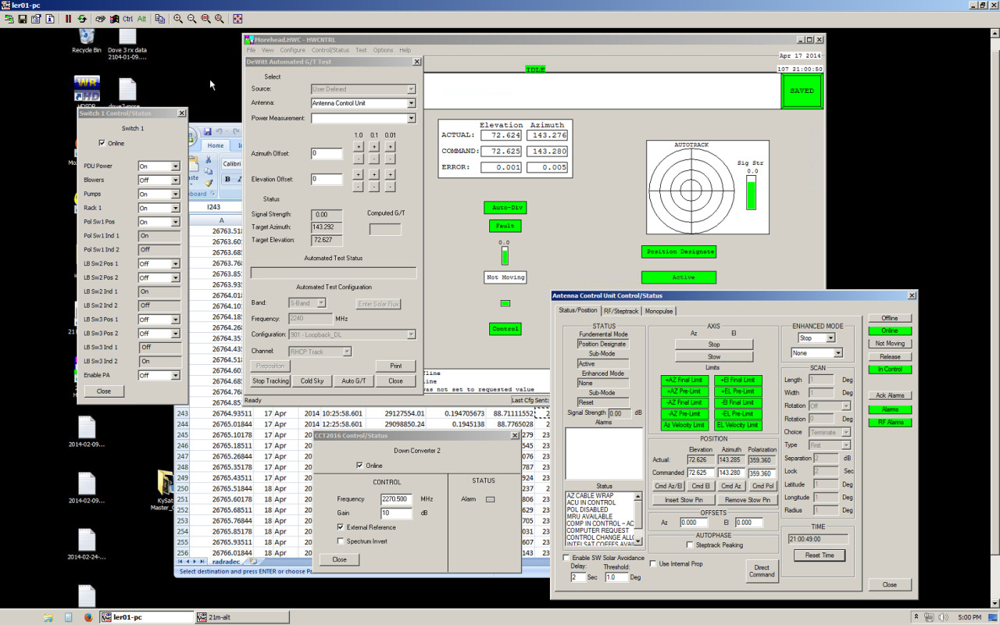
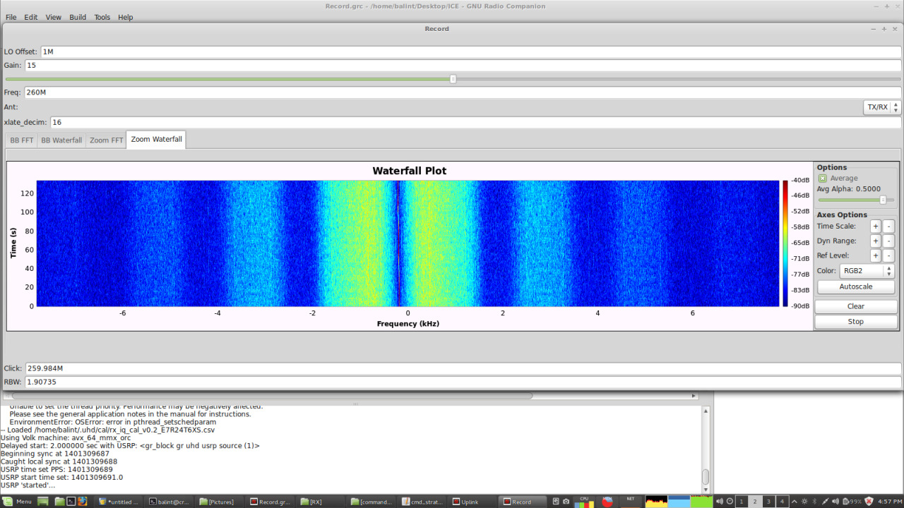
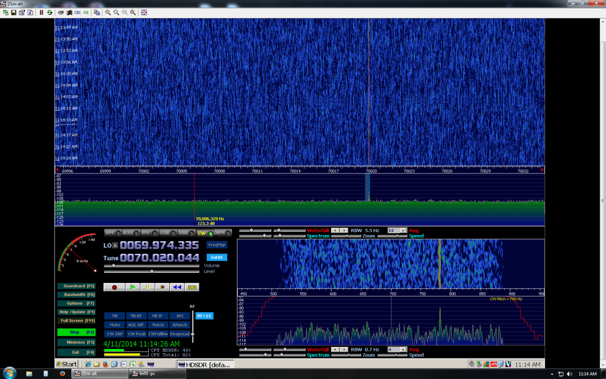

downloading a 442-piece photoset from flickr uploaded by one of the guys who took photos with his DSLR during our trip
the set is not allowed to be downloaded in one for some reason
still downloading it in one
silly app gives random, fixed length numeric names for the files as it downloads them (presumably that’s the images’ ID on flickr or something)
renaming all 442 files in one click with IrfanView’s aptly named batch rename tool by using $E270 as name pattern, which is the EXIF data called ImageDescription, which happens to be the original file name of the images
figuring this out all by myself


